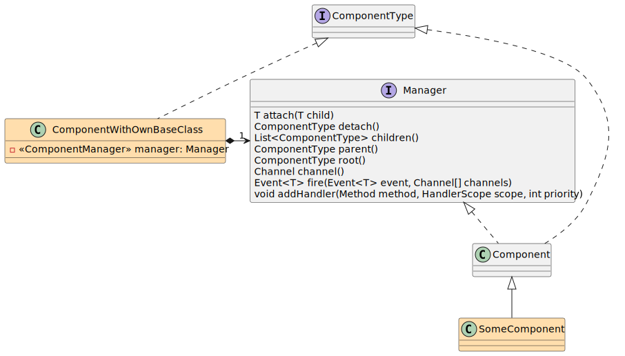
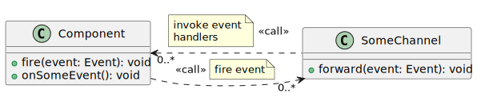

-
Interface Summary Interface Description Associator Implemented by classes that allow arbitrary objects to be associated with instances.Channel Instances of this this interface can be used as a communication bus for sending events between components.Channel.Default This interface’s class can be used to specify the component’s channel (seeComponent.channel()) as criterion in handler annotations.ComponentFactory A general purpose factory interface for components.Components.IdInfoProvider Implemented by classes that want a special class (scope) to be used for looking up their id or want to map to another object for getting the id (seeComponents.objectId(Object)).Components.TimeoutHandler Instances are added to the scheduler in order to be invoked at a given time.ComponentType This interface marks a class as a component.Eligible This interface provides a mechanism for matching objects, using a filter on the object’s “kind” as criterion.EventPipeline An interface that describes a queue of events that are sent to the components of the associated tree.HandlerScope This interface allows to verify whether a given event fired on one of the given channels is handled by a handler.Manager The interface that provides the methods for manipulating the component and the component’s hierarchy and for firing events.Self This interface type can be used to specify the object itself as channel in handler annotations. -
Class Summary Class Description ClassChannel This class is the root base class for channels that use their class (type) as value for matching (seeEligible).CompletionEvent<T extends Event<?>> A base class for completion events that use the completed event as their result type.CompletionLock Represents a lock that prevents sending completion events.Component This class can be used as base class for implementing a component.ComponentCollector<F extends ComponentFactory> A component that collects all component factory services of a given type and creates an instance of each.Components This class provides some utility functions.Components.Timer Represents a timer as created byComponents.schedule(TimeoutHandler, Instant).Event<T> This class is the base class for all events.NamedChannel This class provides channels that are identified by a name (string).NamedEvent<T> A class for events using a simple name as the event’s kind.
Package org.jgrapes.core Description
Defines the interfaces and classes that provide the core functionality of the JGrapes event driven component framework.
Components
A JGrapes application consists of a tree of components that interact using events.

Components can be defined in two ways. Classes can implement the interface
ComponentType and provide a special attribute
that allows them to access their component manager
(see the description of the interface ComponentType
for details). Alternatively, classes
can inherit from Component. This base class
implements ComponentType and also provides the
component manager for the component.

The Manager interface enables the components
to access the functions of the framework. This includes methods
for manipulating the tree structure
(Manager.attach(ComponentType),
Manager.detach() etc.) and methods
for sending and handling events
(Manager.fire(Event, Channel...),
Manager.addHandler(Method, HandlerScope, int)).
Events
Events are objects that trigger activities of the components that
handle them. Because components are usually only interested in certain
kinds of triggers, events implement the Eligible
interface that enables the user to obtain an event’s kind (as criterion)
and to filter events according to their kind.

As implemented in the base class Event, the
kind of an event is represented by its Java class. E.g. a
Started event is an instance
of class org.jgrapes.core.events.Started and its kind
(obtainable from Event.defaultCriterion())
is org.jgrapes.core.events.Started.class.
Especially when building small sample applications, some programmers
prefer to use a name for representing the kind of an event. The core
package supports this by providing the NamedEvent.
This class overrides Event.defaultCriterion()
and Event.isEligibleFor(Object) so that a
simple string is used to represent and match the event’s kind.
Event Handlers
Event handlers are methods that are invoked by the framework.
These methods have return type void and can have zero to
two parameters. If specified, the first parameter must be of type
Event (or, as usual, a super type of
Event). The purpose of the second (optional) parameter will be
explained in the next section.
Event handlers are usually registered with the framework using
an annotation. The standard annotation for registering event handlers
is Handler. See its definition
for usage examples. If special needs arise,
other annotations for registering handlers may be defined using the
HandlerDefinition.
If the information required for using the handler annotation is not
(completely) available at compile time, handler methods can also be added
at runtime using
Manager.addHandler(Method, HandlerScope, int).
Channels
Because events are usually only relevant for a subset of the application’s components, events are fired on so called channels. Event handlers are attached to one ore more of those channels.
In order for objects to be usable as channels, they must implement the
Channel interface, which implies implementing
the Eligible interface. The core package
provides two predefined types of channels: the
ClassChannel, that uses a Java class for
identification and the NamedChannel, that uses
a name (String) for identification.
A third group of channels is implicitly provided by the
Components, which implement the
Channel interface as well. This means that
every component can be used as a channel.
From a conceptional point of view, components fire events on one or
more channels, and the channels forward the events to all (0 to many)
interested event handlers (in reality, channels are only used as
identifiers in event management).
See Manager.fire(Event, Channel...) for
a description of how to choose channels when fireing an event.

A handler is considered to be interested in an event if it has registered with one of the channels that the event is fired on and the event is of a type that the handler (annotation) has specified as being processed by the handler (see above)1.
The channels that an event has been fired on are made available
when the event is passed to an event handler by
Event.channels(). In some use cases, an
event handler has to perform an action for each of the channels. To
simplify this, an event handler may specify a second parameter
of type Channel. In this case, the handler
is invoked by the framework once for each channel that the event
was fired on. If the type of the second parameter is a super type
of Channel, it is invoked only if the
paramter is assignable from the actual channel.
Event Processors
…
Logging
The package supports some specific (java.util) logging settings.
org.jgrapes.core.handlerTracking.level- If set to
FINE, causes events and their handlers to be logged before the handler is invoked. If set toFINERadditionally causes events without any handler to be logged and if set toFINESTalso logs the result of invoking a handler (the additional logging is done with log levelFINE, just as the logging of the invocations). Enabling the invocation logging involves some performance penalty because additional information (not required for normal operation) has to be maintained. org.jgrapes.core.classNames.level- If set to
FINER, class names are converted to fully qualified names intoString()methods.
-
The mapping from a tuple “(event, channels)” to the handlers is evaluated once for a new tuple and then cached. So once the cache has been filled, event processing imposes only a relatively small constant overhead over invoking methods directly. The cache is cleared if the handlers are removed or added. Therefore, frequent changes of the applications structure whie running it should be avoided.
↩